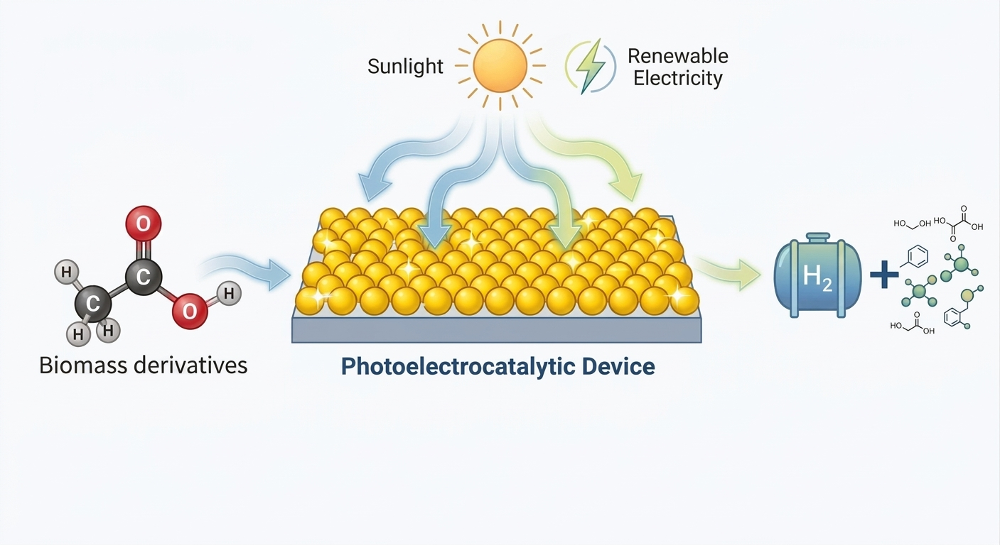

ITALIAN FUND FOR SCIENCE · FIS 2024–2025
Developing smart photoelectrocatalytic systems for the simultaneous production of sustainable chemicals and clean fuels from biomass-derived molecules using solar energy and renewable electricity
Explore the researchTHE PROJECT
PESCHE-FU develops a new photoelectrocatalytic strategy in which the conversion of biomass-derived molecules is coupled with a tunable electrocatalytic process, enabling the efficient use of solar light and renewable electricity.
The project combines advanced catalytic materials, fundamental understanding of catalytic processes and device integration to establish new sustainable routes for chemical production and energy conversion.
Prof. Paolo Fornasiero
University of Trieste
€2,281,564.00
2025 – 2031
THE PROJECT IN A GLANCE

RESEARCH
The project is organized around four interconnected research areas, from the development of smart catalysts to the integration of a complete photoelectrocatalytic device.
Selective solar-driven oxidation of biomass-derived molecules.
Tunable catalytic pathways towards hydrogen and hydrogenation products.
Understanding how catalyst structure governs catalytic performance.
Integration of photo- and electrocatalytic processes.
PROJECT AMBITION
PESCHE-FU aims to bridge fundamental catalysis and technology development through the realization of an integrated photoelectrochemical demonstrator, progressing towards validation under environmentally relevant conditions (TRL 5).